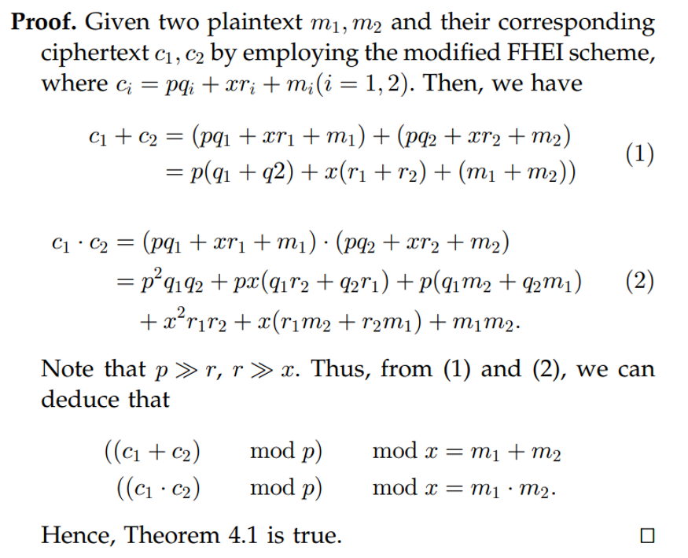
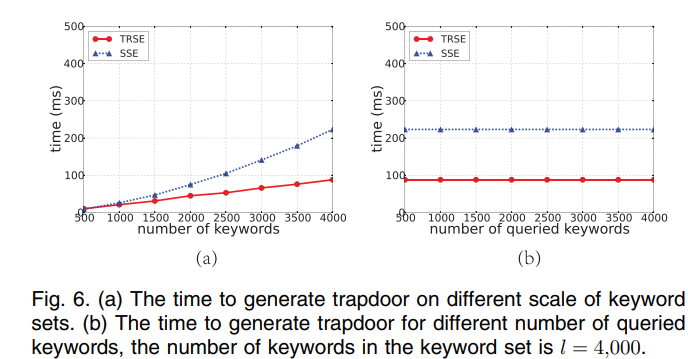
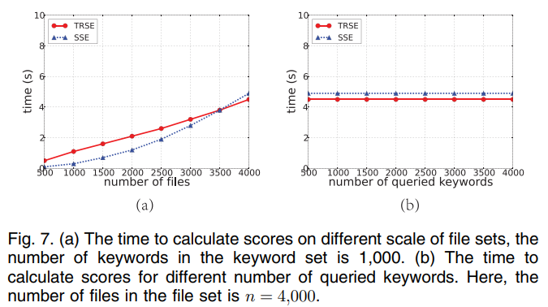
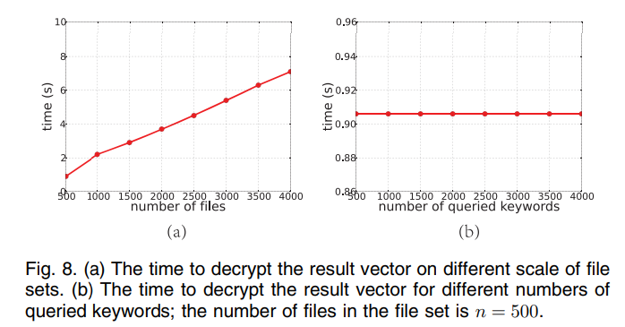
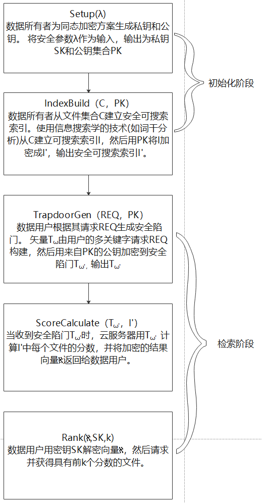
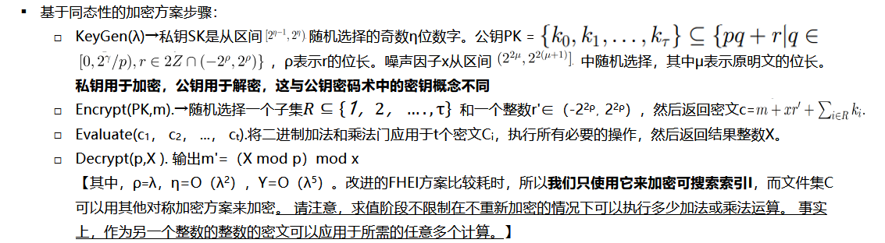

参照原文：
他们为什么做这项⼯作？(背景和目的）
背景：
云计算是高级数据服务的关键模式，已成为数据用户外包数据的必要可行性。 但是，随着诸如电子邮件，健康历史记录和个人照片之类的敏感信息的外包正在爆炸式增长，人们不断提出有关隐私的争议。 关于云计算系统中的数据丢失和隐私破坏的报告不时出现。在云计算中，数据所有者可以与许多用户共享他们的外包数据，这些用户可能只想检索他们感兴趣的数据文件。最流行的方法之一是通过基于关键字的检索。 但是现存的方案存在两个问题-布尔表示以及如何在安全性和效率之间取得平衡。
目的
有了前面的大致背景介绍，我们可以知道，提出一种能够满足了密码云数据多关键字top-k检索的安全性同时由兼顾效率与安全性以及方案稳健性的云端数据检索方案是必要的
针对这项⼯作，别⼈做过了哪些⼯作，有哪些缺陷？
A.单关键字检索
- 参考文献[8]，[22]，[23]研究了传统的可搜索加密，重点是安全性定义和加密效率，这些工作仅支持布尔关键字检索而没有排名。
Zerr等[参考文献10]提出了一种排序模型，以保证协作组之间保存隐私的文档交换，该模型允许从外包的倒排索引中保存隐私的top-k检索。他们提出了一个相关性分数转换功能，以使不同术语的相关性分数难以区分，从而提高了索引数据的安全性。
Wang等[参考文献9]探索了云计算中对加密数据的top-k检索。 他们在SSE的基础上提出了一对多的OPM，以进一步提高效率，同时安全性和检索精度稍有下降
仅支持单关键字检索，与实际需求不符【多关键字检索】
B.多关键字检索
- 曹等人[参考文献25]首次尝试定义和解决加密云数据的top-k多关键字检索问题。他们使用坐标匹配法和内积相似度来衡量和评价相关性得分。
- Hu等人[参考文献26]使用同态来保护数据隐私。 他们设计了一个安全的协议来处理k近邻(KNN)索引查询，从而保护了所有者的数据隐私和客户端的查询隐私。
共享查询关键字的文件得分相同，这种情况远不精确，从而削弱了数据利用的有效性，由于所有这些服务器端方案都采用基于OPE的服务器端排名，因此安全性受到影响
他们⼤概是怎么做这项⼯作的？（⼀两句话概括）
本文提出并解决了密码云数据多关键字top-k安全检索问题，引入相似相关性和方案稳健性的概念来描述可搜索加密方案中的隐私问题，并提出了一种两轮可搜索加密方案(TRSE)**来解决方案的不安全性问题。 在密码和信息检索采用同态加密和向量空间模型。 在该方案中，大部分计算工作在云上进行，用户参与排序，保证了对加密的云数据进行top-k多关键字检索**，具有较高的安全性和实用效率。
他们的这项⼯作，做的好不好？好在哪⾥？
他们这项工作的优点大致有以下几点：
- 创新性地提出了相似度，相关度和方案稳健性的概念，相似相关度对于阐述了不同个体之间的关联可能导致的隐私泄露。方案稳健性则是基于相似相关度衍生出来的判定SSE方案的可靠性的指标。
- 充分考虑了用户端的计算规模小于服务器规模，从而让大部分计算由云端服务器完成（打分和排名），并采取两轮通信的策略使得该方案完美地闭环。
- 引入了IDF因子，减少集合中非常频繁出现的词的权重，并增加很少出现的词的权重。
- 安全性和效率也经过了检验
他们这项⼯作，有没有不好之处，不好在哪⾥？
这篇文章涉及大量的数学理论基础，详细地过程缺点看不出qwq，但是文章确确实实提到了一些劣势：
- 虽然TRSE方案采用了改进地FHEI来简化同态加密以及加密过程，但是却是以较大的密钥大小为代价实现的。 虽然可以采用模约简和压缩等优化方法来减小密文的大小，但是对于实际系统来说，密钥大小仍然过大。
- 数据用户发起的用于查询的加密陷门大小也过大，通信开销会非常高。为了解决这一问题，从而提高效率，可能需要对搜索模式的安全性进行权衡。
- 对于数据的更新支持性：存在更新时，文件本身和可搜索索引都需要更新操作， 添加或删除文件时，关键字的IDF因子可能会更改。因此必须添加另一个辅助向量来存储每个关键字的IDF值，从而增加了服务器的计算开销。
他们的这项工作做的好，为啥好呢？他们是⽤啥理论证明的呢？ （可能涉及方法正确性、性能、安全性）
A.正确性
修改后的整数的全同态加密
同态加密允许对密文进行计算，而无需了解任何有关明文的信息，从而获得正确的加密结果。 但是原始的完全同态加密方案对于实际应用而言过于复杂且效率低下，而本方案仅需要对整数进行加法和乘法运算即可从加密的可搜索索引中计算相关性得分，将完整形式的原始同态性简化为仅支持整数运算的简化形式。

同时证明了修改后的整数的全同态加密保证了同态性
向量空间
向量空间模型[19]是用于将文件表示为向量的代数模型。 向量的每个维度都对应一个单独的词，即，如果一个词出现在文件中，则其在向量中的值将为非零，否则为零。 向量空间模型支持多项式和非二进制表示。 此外，它允许计算查询和文件之间的连续相似度，然后根据文件的相关性对文件进行排名。
B.安全性
改进的FHEI加密的安全性
改进的FHEI加密的安全性等同于解决数论中的近似gcd问题[22]**。对近似gcd问题的已知攻击包括蛮力攻击，连续分数攻击[20]和HowgraveGrahams近似gcd攻击[14]。**该方案对上述三个攻击均有一定的抵御能力。
TRSE方案
- 与传统的SSE方案相比，TRSE方案将信息泄漏渐近减少为零。对于不同查询中的相同关键字，相同查询中不同关键字的加密是独立的，即哪些关键字已经被检索到是隐蔽的，因此访问模式和搜索模式是安全的。
- 由于修改后的FHEI加密不要求保留顺序，因此安全可搜索索引I’中的得分将根据PK的随机选择子集被加密为随机间隔。因此解决了项分布和相互分布两种可能导致统计泄露的问题。
- 总的来说，我们提出的TRSE方案足以克服传统的基于OPE的服务器端排名SSE方案带来的不可避免的安全威胁。 具体地说，TRSE隐藏了相似性相关性，并保持了方案的稳健性。 因此，TRSE方案保证了高度的数据保密性。
C.性能
由于初始化阶段仅需要处理一次，而检索阶段可以处理多次，因此总体效率由“检索”阶段决定。虽然两轮通信将检索阶段细分为两个额外的阶段，从而增加了额外的开销，但我们的方法在保证实际效率的同时，方案的稳健性和安全性都得到了显著的提高。具体地说，用户端的计算规模小于服务器端，即大部分计算由云端服务器（云端服务器拥有极其强大的算力，额外的一点计算开销问题不大）完成。此外，如前所述，查询关键字数量的增加不会降低检索阶段的性能，这引入了TRSE方案良好的可扩展性。
他们这项⼯作做的好，肯定有实验，那么他们怎么⽤实验来证明 他们的好的？
A. 实验环境
实验环境包括用户端和服务器端。用户在运行2.0 GHz的Core 2 Duo CPU的Windows7计算机上，服务器在运行2.4 GHz的Xeon E5620 CPU的Linux计算机上。 用户充当数据所有者和数据使用者，服务器充当云服务器。
B. 数据集、数据集处理方式
详细的数据集文中并没有详说（可能随机选择了不同规模的数据集）。至于数据集的处理方式，则是通过对同一数据集分别使用TRSE和传统SSE方案的结构对比来得到结果。
C. 编码语⾔
疑似C语言
D. 对比角度和方法
将本文的TRSE与传统的SSE对比，而由于我们的方法采用了两轮通信，这与任何服务器端排名的SSE方案都不相同，因此只有两个共享阶段可供我们进行比较，包括TrapdoorGen和ScoreCalculate阶段。然后就这几个阶段的结果分别对比。
E. 实验结果
- TrapdoorGen阶段:具体而言，TRSE相对于关键字集大小的增加，将时间成本从指数增长降低到线性增长。 此外，查询向量的长度固定为l，因此，当查询的关键字数量增加时，生成陷门的时间是不变的。 具体地，当关键字集中的关键字的数量为l =000时，在该阶段，TRSE花费大约SSE方案时间的一半。

- ScoreCalculate阶段:在文件集的大小增长到超过3500个之后，TRSE的性能要优于SSE方案，而且，服务器端和用户端之间的计算能力差异通常会比我们的实验环境中的差异大得多，因此在实践中可能会进一步减少计算分数的时间。

- ResultDecrypt阶段:数据用户解密n维结果向量以获得分数的明文。 由于结果向量的大小仅取决于文件集中的文件数，并且每个维度的解密都需要进行恒定数量的模块化计算，因此解密的总体复杂度为O（n）,结果显示也是TRSE明显优于传统SSE。

- Top-K阶段：对检索阶段的总时间成本的影响可以忽略不计。
F. 实验分析
虽然两轮通信将检索阶段细分为两个额外的阶段，从而增加了额外的开销，但我们的方法在保证实际效率的同时，方案的健壮性和安全性都得到了显著的提高。具体地说，用户端的计算规模小于服务器端，即大部分计算由云端服务器完成。此外，如前所述，查询关键字数量的增加不会降低检索阶段的性能，这引入了TRSE方案良好的可扩展性
针对这项⼯作，他们有没有说，未来还打算怎么做呢？具体说了哪些呢？
并没有正是提到未来的展望。但是也字里行间透露有
- 加密陷门大小过大，可能需要找到一种能提供更合理密文大小的新加密方案，从而使TRSE方案的效率可以进一步提高。
- 想办法解决对于数据频繁更新的支持性。
这项⼯作的idea与哪些论⽂有⼀脉相承的关系呢？或者说，你感 觉这篇论⽂的作者是看了哪些论⽂，才想到这项⼯作的idea呢？
- Wang等[9]探索了云计算中对加密数据的top-k检索,为本文提供了一个思路。
- Hu等人[26]使用同态来保护数据隐私，
- Dijk等人[11]提出的整数的全同态加密（FHEI）方案以及[18]的基于理想格的全同态加密
- 参考文献[19]提出的向量空间模型
这篇论文的核心参考文献是？这些参考文献都起到了什么作用呢？
Dijk等人[11]提出的整数的全同态加密（FHEI）方案以及[18]的基于理想格的全同态加密。
这两篇参考文献是本文的改进的整数全同态加密（FHEI）的基础.
参考文献[19]提出的向量空间模型
正是有了[19]对于向量空间模型的研究，才给了本文将文件和关键字带入向量空间的成果。
Hu等人[26]使用同态来保护数据隐私，为本文的如何确保云端数据安全并保证可运算性提供了思路。
这项工作，可以拆分为哪些子工作，就是哪些步骤。每个步骤， 或者每个子工作使用了哪些⼯具或者方法去完成的呢？画⼀个包含步骤和工具的类似流程图的东西呢。

大致就是这样的过程，还有具体的同态加密的过程

写在最后
这篇论文总体我觉得偏难，还有很多没有理解到的地方，以后有必要再多温习。